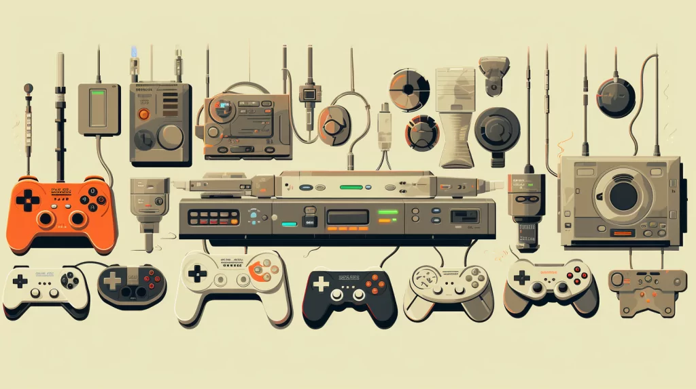

Historia de los videojuegos
Durante bastante tiempo ha sido complicado señalar cual fue el primer videojuego, principalmente debido a las múltiples definiciones de este que se han ido estableciendo, pero se puede considerar como primer videojuego el Nought and crosses, también llamado OXO, desarrollado por Alexander S.Douglas en 1952. El juego era una versión computerizada del tres en raya que se ejecutaba sobre la EDSAC y permitía enfrentar a un jugador humano contra la máquina.
En 1958 William Higginbotham creó, sirviéndose de un programa para el cálculo de trayectorias y un osciloscopio, Tennis for Two (tenis para dos): un simulador de tenis de mesa para entretenimiento de los visitantes de la exposición Brookhaven National Laboratory.
Este videojuego fue el primero en permitir el juego entre dos jugadores humanos. Cuatro años más tarde Steve Russell, un estudiante del Instituto de Tecnología de Massachussets, dedicó seis meses a crear un juego para computadora usando gráficos vectoriales: Spacewar.
En este juego, dos jugadores controlaban la dirección y la velocidad de dos naves espaciales que luchaban entre ellas. El videojuego funcionaba sobre un PDP-1 y fue el primero en tener un cierto éxito, aunque apenas fue conocido fuera del ámbito universitario.
En 1966 Ralph Baer empezó a desarrollar junto a Albert Maricon y Ted Dabney, un proyecto de videojuego llamado Fox and Hounds dando inicio al videojuego doméstico. Este proyecto evolucionaría hasta convertirse en la Magnavox Odyssey, el primer sistema doméstico de videojuegos lanzado en 1972 que se conectaba a la televisión y que permitía jugar a varios juegos pregrabados.